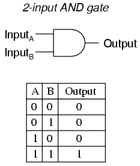

Logic Gate Lesson
Beginners introduction to logic gates:
A logic gate is an elementary building block of a digital circuit. The output of a logic gate is determined by the inputs to the gate. Inputs are binary values of 0 or 1. In Gate Grabber, all logic gates have 2 inputs. Truth tables are used to describe the behavior of each type of logic gate. In each truth table, A and B are the inputs to the gate.
OR gate
RULE: Any input (0 or 1) and a 1 will always output a 1. The only way to output a 0 is when both A and B are 0.

AND gate
RULE: Any input (0 or 1) and a 0 will always output a 0. The only way to output a 1 is if both A and B are 1.
